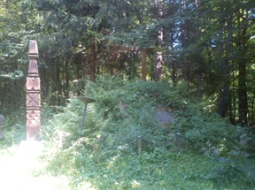
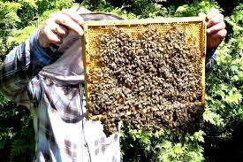
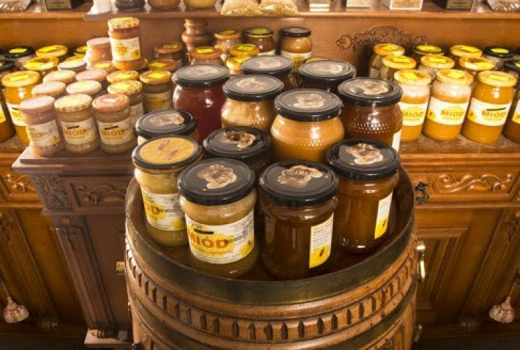

Dzięki walorom przyrodniczym gmina ma duże szanse na rozwój turystyki. Przy Szkole Podstawowej w Batorzu mieści się schronisko turystyczne (na około 60 miejsc noclegowych). W gminie działają dwa gospodarstwa agroturystyczne:
- w Wólce Batorskiej (Kazimierz Zośko)
- w Batorzu (Danuta Twarogowska)
Gmina Batorz leży w północnej części Roztocza Zachodniego.
W Batorzu znajduje się najwyższe wzniesienie tej części
Roztocza (Sowia Góra 310 m n.p.m.). Batorz jest jedną
z najpiękniej położonych miejscowości powiatu janowskiego.
Leży w dolinie otoczonej zalesionymi wzgórzami.
Podobnie piękny krajobraz ma cała gmina. W pokrywie
lessowej płynące wody wyrzeźbiły sieć wąwozów,
które porośnięte są lasami. Rozległe wierzchowiny
są znakomitymi punktami obserwacyjnymi.
Są to tereny ubogie w wody powierzchniowe.
Swoje źródła ma tu jedynie rzeka Por- dopływ Wieprza.
Tej niewielkiej rzeczce niewątpliwego uroku dodają
wierzby rosnące po obu stronach jej koryta.
Wśród kompleksów leśnych odnaleźć można
grądy i zarośla grabowo-bukowe, a także monokultury sosny.
Na uwagę turysty z całą pewnością zasługują okazy olbrzymich,
sędziwych drzew uznanych za pomniki przyrody
i objętych ochroną konserwatorską. Na terenie gminy
jest ich 17, są to: lipy, buki, klony, jawory, wierzba,
modrzew europejski oraz brzoza brodawkowa.
Sowia Góra to lessowe wzgórze poprzecinane malowniczymi wąwozami i gęsto porośnięte lasem. U zbocza Sowiej Góry leży wieś Batorz. Poruszając się z centrum wsi w kierunku wzniesienia przekraczamy małą rzeczkę, a dalej idziemy pod górę malowniczym wąwozem. Na końcu wąwozu znajduje się mały kopiec porośnięty trawą. Przy kopcu postawiony jest drewniany krzyż a obok stoi kopijnik ( kopijnik to drewniany nagrobek słupowy, stawiany zazwyczaj na grobach węgierskich żołnierzy dla upamiętnienia ich bohaterskich czynów). Na kopcu umieszczona jest tablica z wizerunkiem Marcina Borelowskiego-Lelewela. Przy kopijniku jest też tablica pamięci w języku węgierskim poświęcona żołnierzom węgierskim. Marcin Borelowski-Lelewel był pułkownikiem w powstaniu styczniowym. Wsławił się głownie tym, że dowodził oddziałem powstańców styczniowych, który stoczył i wygrał bitwę z wojskami rosyjskimi. Bitwa rozegrała się pod miejscowością Panasówka na Roztoczu. 3 września 1863 roku powstańcy styczniowi w sile około 1500 osób starli się z siłami rosyjskimi w sile około 4000 żołnierzy. Bitwę ta wygrali Polacy u których boku walczył też oddział żołnierzy węgierskich. Bitwa ta była jedną z największych bitew powstania styczniowego.
Grażyny i Marka Serwatki zam. w Batorzu Drugim. Jest to pasieka rodzinna (wcześniej zajmował się głównie Jan Serwatka, a obecnie praktycznie wszystkie prace wykonuje jego syn Marek wraz żoną ). Uczniowie uzyskali wyczerpujące informacje nt. życia pszczół i pracy pszczelarza: jakie zadania mają pszczoły w ulu, jak długo żyją i wreszcie ile pszczół jest w ulu. Poznali fazy rozwoju pszczół, znakowania matek (królowej pszczół). Zobaczyli narzędzi a i przyrządy niezbędne w pasiece (dymiarkę, drewniane ramki pszczele, skrobak pasieczny i wirówkę) . Dowiedzieli się ,że zanim miód znajdzie się w słoiku trzeba wykonać wiele etapów prac. Pan Marek wspomniał też ,że pszczoły atakują różne choroby np. zgnilec amerykański , ale też szkodzą im również opryski chemiczne stosowane przez rolników w nie odpowiedniej porze dnia.
 Mięso myjemy , osuszamy kroimy w drobna kostkę , podsmażamy na patelni na złoty kolor , przekładamy do garnka . Cebulę obieramy , siekamy drobno i również podsmażamy , przekładamy do mięsa , zalewamy wodą około 500 ml dodajemy przyprawę do gulaszu , dusimy na małym ogniu około 30 minut , doprawiamy do smaku solą , zagęszczamy wodą z mąką ( 200 ml zimnej wody z 4 łyżkami mąki ) , wlać do sosu zagotować . Kaszę gotujemy w osolonej wodzie , studzimy . Wykładamy na talerz polewamy sosem z mięsem i kładziemy ogórka. Smacznego!